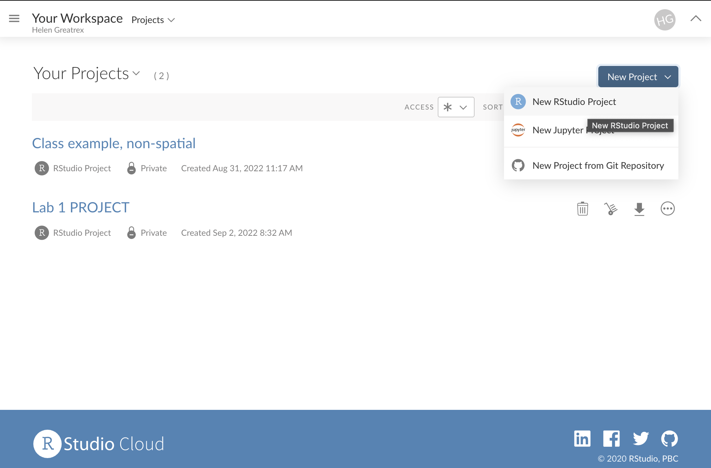

Tutorial 1: R Basics
Basics
What are R and R studio?
R is a LANGUAGE
R is a free, open source statistical programming language. It contains millions of commands that are useful for data cleaning, analysis, and visualization.
By a “programming language”, I mean it is a collection of commands that you can type into the computer in order to analyse and visualise data.
The easiest way I find to think about R is that it is literally a language, like Spanish or Hindi, that is spoken by your computer. Learning R means learning vocabulary and grammar in order to communicate. It also means it will get easier with experience and practice..
R-STUDIO is a Software Environment
R-studio is a software environment, e.g a programmed designed to make it easy to write code in “R”.
It has many useful features. For example, you can easily see help files, run code, see your output and create outputs like this lab book! R-Studio also allows us to make interactive documents called R-Markdown files.
TO DO! Watch this
Watch this 1 minute video on R-Studio: https://www.rstudio.com/products/rstudio/
Or, if you prefer, this 5 minute video
R-Projects
An R-project is a folder that will store everything to do with each lab in one place on your computer. On the website, each lab will be its own project.
This is incredibly useful - it means that if you switch from R-Cloud, to the lab computers, to your laptop, all you have to do is to move the folder and everything will just work. Equally, its easy to compare labs.
Learn more here. You will have a project for each Lab and I may share projects with example code.

Accessing R
There are two ways to do the labs, on your own computer or on the R studio Cloud website.
- DESKTOP: Means do this if you are using your own computer or laptop
- CLOUD: Means do this if you are using the website
R studio Cloud
The easiest way to get R-studio is to simply to use the R-Studio Cloud website
Here you can log into an online version of R. and I believe is free for the first 25hrs each month. Like Jupyter Notebook, you can also programme in other langauges. If you need more time, you can make a new account, or pay for one month, or move to your desktop.
- Advantages:
- Super Easy. You will never have to worry about versions or updating.
- Projects are incredibly easy and I can debug things fast
- You can do your labs anywhere you have access to a webpage
- Disadvantages:
- It’s not as powerful, you won’t be able to play will millions of data points
- You have to be online; bad internet connections make it harder
To sign up, make an account at https://rstudio.cloud/plans/free, then click the tabs here to look around. Sadly there is no student pricing right now.
Getting started on the cloud
Once you have logged in, you will get to a dashboard like this, called the R-studio workspace. You make a new project by clicking the button on the top right. You can open different projects in different tabs on your browser. You can also go back to the work-space at any time.
You can get here from any web-browser, You do not need a special computer.

Returning to your lab project
On the cloud this is very easy, just go back to https://rstudio.cloud/content/yours
Downloading files
Ignore this until later on and you need to submit your lab.
You will need to submit two files for each lab, an “.Rmd” and a “.html”. More later on those, but here is how to download them so you can submit them
On the R-Studio Cloud website; inside your project, go to the files tab (next to Projects/Help in one quadrant. You will see a list of files, one with the file type .Rmd (your code) and one with .html(the website you made when you pressed knit). Look at the red circle in the pic below
Click the checkbox to the left the .RmD
Look just above at the Files quadrant settings menu. Click the blue “more” cogwheel icon. (see diagram)
Now click export. This will download the file and export it to Canvas s
REPEAT FOR THE HTML (you can do them together but it exports as a zip)

Uploading files
Simply click the upload button inside your project in the files tab and upload your files. You do not need subfolders.
R Desktop
Installing/updating R. The “VERSION” of R you use is important!
Just like English has evolved over the years, the R language is always evolving. We keep track using Versions.
To make sure we are all on the same page, you need the most up-to-date version of the R commands.
The version of R I am using is :
[1] "R version 4.2.2 (2022-10-31) Innocent and Trusting"As long as yours is that or above that you should be fine. The current most recent version of the language on the website is:
[1] "The latest release (2022-10-31, Innocent and Trusting)"